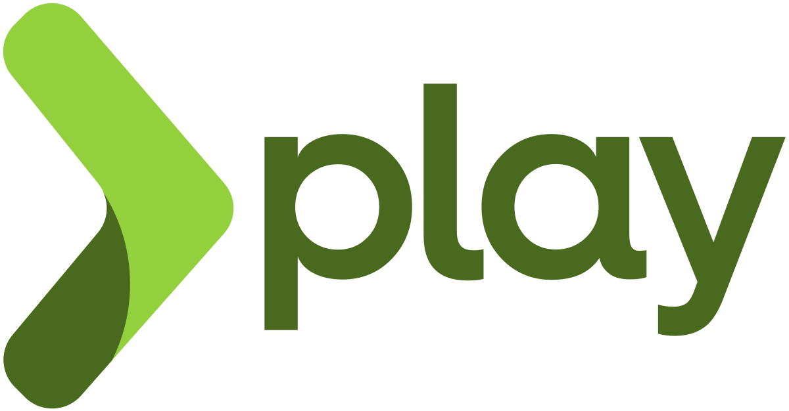
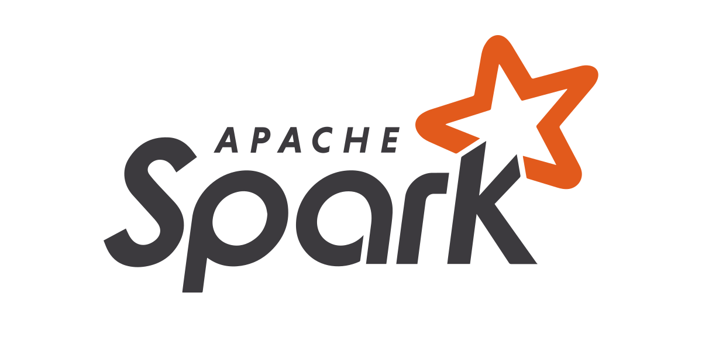
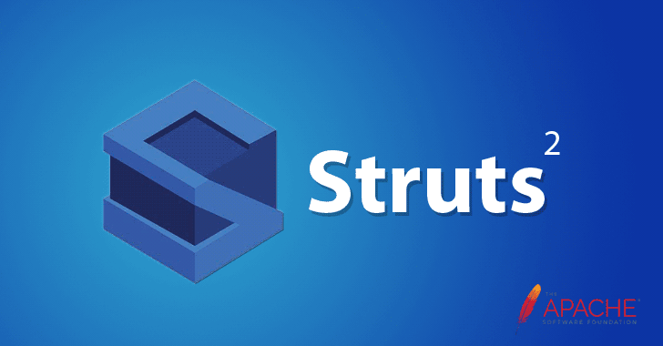

Grails
Vera Artanti,
 Para developer telah menyambut Grails dengan tangan terbuka lebar karena beberapa alasan di bawah ini :
Para developer telah menyambut Grails dengan tangan terbuka lebar karena beberapa alasan di bawah ini :
1. Memiliki integrasi dan interoperat yang mulus dengan Java
2. Dependency injection didukung oleh Spring
3. Mendapat dukungan ORM / Nosql
4. Easy Microservices difasilitasi oleh Spring boot
5. Dukungan dari IDE Java top seperti Eclipse, NetBeans, Sublime Intellij IDEA dll.
6. Scalable dengan menggunakan custom built plugins
Sejarah Grails dimulai tahun 2005 dan hal itu mulai menjadi pertanda bagi pengembangan aplikasi berbasis JVM. Grails tersedia free untuk digunakan sebagai framework open source di bawah Apache License 2.0 dan terus dikelola secara aktif. Grails selalu mendapatkan update reguler dengan sponsor dari Object Computing, Inc (OCI).
Spring MvC
Vera Artanti,
 Spring juga merupakan sistem untuk bekerja dengan banyak frameworks yang dapat digunakan untuk membangun aplikasi JavaEE berskala besar dan kompleks. Mendukung semua frameworks dan teknologi utama di sekitar Java termasuk Tapestry, EJB, Hibernate, Java Server Faces, Struts dan masih banyak lagi. Spring Framework runtime diatur ke dalam beberapa komponen seperti di bawah ini :
Spring juga merupakan sistem untuk bekerja dengan banyak frameworks yang dapat digunakan untuk membangun aplikasi JavaEE berskala besar dan kompleks. Mendukung semua frameworks dan teknologi utama di sekitar Java termasuk Tapestry, EJB, Hibernate, Java Server Faces, Struts dan masih banyak lagi. Spring Framework runtime diatur ke dalam beberapa komponen seperti di bawah ini :
1. Komponen core meliputi beans, core, context dan SpEL
2. APO, Aspects, Instrumentation and messaging
3. Data Access/Integration Layer termasuk JDBC,
4. ORM, OXM, JMS juga Transactions dan di web termasuk WebSocket, Servlet, Web dan Portlet
5. Modul pengujian JUnit dan TestNG yang mendukung pengujian unit dan pengujian integrasi.
Spring MVC adalah salah satu modul Spring framework yang paling populer yang memfasilitasi pengembangan aplikasi web dengan menggunakan paradigma model view dan controller.
Play
Vera Artanti,

Play adalah framework web development open source yang mengambil pendekatan modern dan mendukung pengembangan aplikasi di Java dan Scala. Framework ini sangat ringan, dilengkapi dengan I / O tanpa pemblokiran dan berfokus pada kebutuhan aplikasi web dan seluler. Play semakin populer di kalangan developer setelah diluncurkan kembali pada tahun 2007 dan hingga saat ini banyak situs inovatif didukung oleh Play framework. Beberapa nama besar menggunakannya di satu atau aplikasi web atau seluler lainnya seperti LinkedIn, Klout, GILT, ZapTravel dan theGuardian.
Spark
Vera Artanti,

Dibuat oleh Per Wendel pada tahun 2011 yang membuat pengembangan REST API dan layanan web menjadi keunggulannya. Spark adalah framework open source, canggih dan dapat menangani URL dengan mendefinisikan rute yang terdiri dari kata kerja, path dan callback dengan mudah. Spark paling cocok digunakan bila anda ingin cepat membangun aplikasi web sederhana atau membuat layanan Rest berbasis web dengan semua kendali di tangan anda. Aplikasi anda akan berkisar pada framework Spark ketika telah menghubungkan library dan komponen eksternal, sesuai dengan kebutuhan. Spark telah tumbuh dalam popularitas dengan pertumbuhan arsitektur berdasarkan micro services dan sampai saat ini Spark menjadi salah satu kerangka kerja yang paling dicintai di antara komunitas pengembang Java. Spark di bangun melalui filosofi Lambda Java 8 sehingga memungkinkan anda dapat membuat aplikasi verbose lebih sedikit daripada full stack Java framework lainnya.
Struts2
Vera Artanti,

Struts mencapai puncak kejayaannya satu dekade yang lalu ketika menjadi pemimpin di pasar pengembangan web Java namun kehilangan pamornya selama periode waktu tertentu. Spring frameworks dan pendatang baru lainnya telah mengambil alih banyak pangsa pasar Struts dalam waktu belakangan ini. Namun, banyak orang yang menilai sangat bagus mengenai rilisan terbaru dari Struts dan banyak developer mulai melihat kembali Struts dengan semua perspektif baru yang dibawanya. Struts merupakan framework yang bisa digunakan untuk mengembangkan aplikasi web modern di Java. Framework Struts terukur dengan penggunaan plugin khusus, beberapa plugin yang digunakan untuk pengembangan yaitu plugin untuk REST APIS, JSON dan AJAX. Struts2 mengikuti perkembangan framework web modern seperti Spring, Vaadin dan Grails dll.
Berikut ini adalah beberapa fitur kunci dari Struts :
1. Dukungan AJAX untuk permintaan asinkron dan peningkatan kinerja
2. Pilihan integrasi untuk frameworks lainnya seperti Spring, Hibernate, Tiles dan lainnya.
3. Action berdasarkan plain old java objects (POJO)
4. Kemudahan pengembangan menggunakan UI tags, control tags and data tags dan sebagainya.
5. Konfigurasi MVC menggunakan file xml, mengubah dan mengontrol semuanya dari file konfigurasi Struts.
6. Dukungan tema dan template - xhtml, css xhtml
Netty
Vera Artanti,
 Netty framework banyak digunakan dalam bisnis pengembangan server protokol dan client. Dengan menggunakan Netty, maka dapat mempercepat pengembangan aplikasi jaringan yang bersifat asynchronous, event-driven, fleksibel dan terukur tanpa mengorbankan performanya. Fitur utama dari Netty adalah sebagai berikut:
Netty framework banyak digunakan dalam bisnis pengembangan server protokol dan client. Dengan menggunakan Netty, maka dapat mempercepat pengembangan aplikasi jaringan yang bersifat asynchronous, event-driven, fleksibel dan terukur tanpa mengorbankan performanya. Fitur utama dari Netty adalah sebagai berikut:
1. Dukungan untuk berbagai tipe transport dengan unified API - nonblocking dan blocking socket.
2. Model thread yang dapat dikustomisasi untuk single thread atau thread pools
3. Kinerja tinggi dan memastikan latency rendah, throughput yang lebih baik, salinan memori yang optimal dan konsumsi resources yang lebih sedikit.
4. Mendukung SSL / TSL dan StartTLS untuk memastikan keamanan.
5. Dokumentasi yang bagus dan komunitas yang sangat membantu.